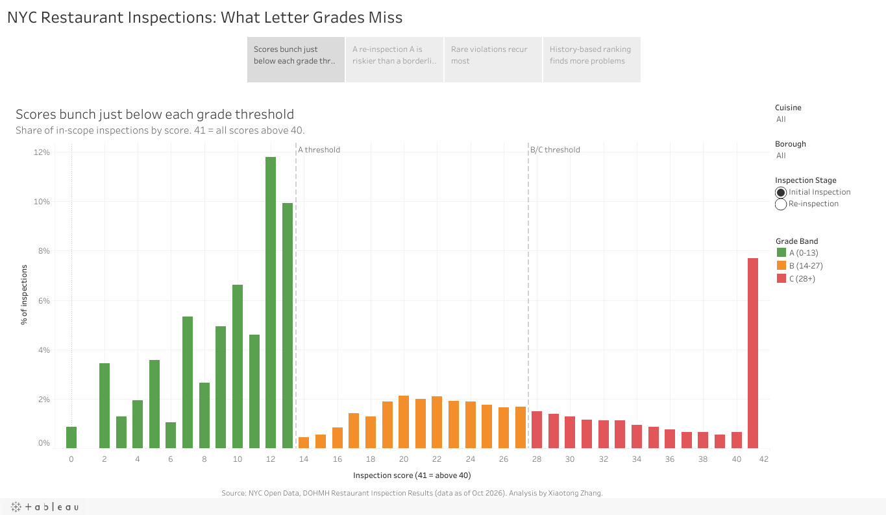

An analysis of 294K inspection records testing whether the grade on the window tells diners — and inspectors — what they actually need to know.
Since moving to Jersey City, I've been crossing the river to eat in New York all the time. I love hunting down new spots, trying whatever looks good, and collecting a mental map of favorites. Somewhere between the dumpling counters and the late-night ramen, I started noticing the letter grade in every window and wondering: does an A really tell me how safe the kitchen is? Is a B a red flag, or just a bad day? That curiosity turned into this project.
New York City grades every restaurant with a letter, and that letter is the signal diners rely on. But a grade is a snapshot of one inspection score. This project asks a sharper question: does the letter actually track food safety risk — and if not, what would a better signal look like?
I cleaned and modeled 294K inspection records end to end, used SQL to test how scores and grades behave, built a history-based risk ranking, and published the findings as a 4-page interactive Tableau story with recommendations for risk-based inspection scheduling.
Source: NYC Open Data, DOHMH Restaurant Inspection Results.
Resolved disguised missing values, duplicates, and business-rule exceptions in Python before any analysis, so every downstream number could be trusted.
Structured the data into three relational tables with primary and foreign key constraints, enforcing integrity at the database level.
Used window functions to examine score distributions and to compare how a restaurant's inspection history and its current grade predict future failures.
Published a 4-page interactive story presenting the findings and recommendations for risk-based inspection scheduling.
If inspection scores were distributed smoothly, adjacent scores around a grade threshold should look similar. They don't. Scores of 12–13 make up a large share of initial inspections, while a score of 14 — one point higher, and the cutoff for losing an A — is almost absent.
Bar lengths are proportional to the values shown.

Story page 1 — Scores bunch just below each grade threshold · Open the interactive story ↗
I ranked restaurants by their past inspection history and asked: if inspectors visited only the top 20%, how many serious failures would they catch? I compared that against ranking by current grade and against random selection.
Bar lengths are on a 0–100% scale.
A simple one-line scoring rule captured most of this gain, which matters in practice: a rule an inspector can apply by hand is far more adoptable than a black-box model.
Letter grades are a useful public signal but a weak scheduling tool. The Tableau story closes with recommendations for risk-based inspection scheduling: use each restaurant's inspection history to decide who gets inspected sooner, so limited inspector time goes where serious failures are most likely.
This project reinforced that the most useful analysis often questions the metric itself. Cleaning and modeling the data carefully made the later findings defensible, and framing the result as a decision — who should be inspected next — turned a set of statistics into something an operations team could act on. That's the same loop I want to bring to product analytics: data quality, a sharp question, and a recommendation someone can use.